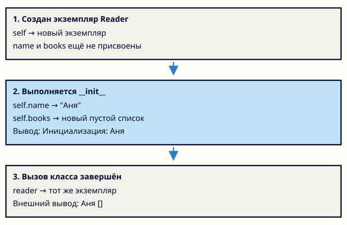
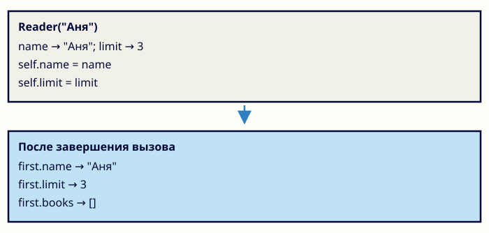
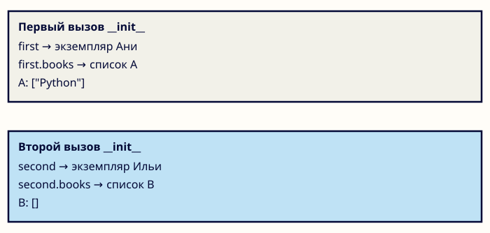
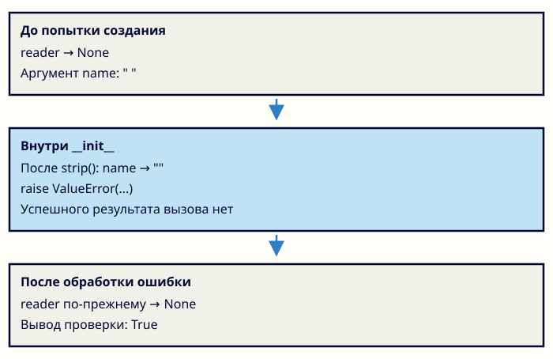
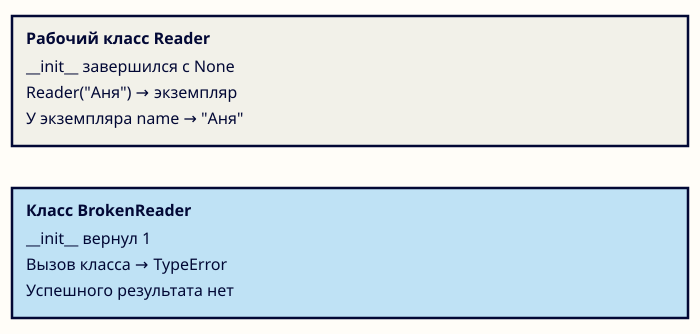

Глава 8.4
Инициализатор __init__
В этой главе разобраны вызов __init__, передача начальных данных, создание отдельных списков и ошибки инициализации. Каждый этап показан на модели читателя библиотеки.
- Перед началом
- Главы 8.1–8.3; функции, списки и исключения
- После главы
- Понимать порядок инициализации и задавать проверенное начальное состояние.
- Среда
- Python 3.11 и новее · самостоятельные примеры
- Основа
- Модуль 8 исходного справочника · с. 545
§1 Когда выполняется __init__
В главе 8.3 экземпляры получали имя и список при создании. Теперь разберём этот этап подробно. Бланк билета сначала появляется, затем заполняется: в программе начальные данные задаёт инициализатор __init__. Это специальный метод, который вызывается при обычном создании экземпляра нашего класса.
class Reader:
def __init__(self, name):
self.name = name
self.books = []
print("Инициализация:", self.name)
reader = Reader("Аня")
print(reader.name, reader.books)Инициализация: Аня Аня []
Инструкция def определяет метод внутри класса. В его имени с обеих сторон стоят два подчёркивания. При вызове Reader("Аня") новый экземпляр передаётся в self, строка — в name. Два присваивания создают атрибуты этого экземпляра. Сначала выводится строка из инициализатора, затем выполняется внешний print.
Проследим этот порядок на одном экземпляре, чтобы отделить создание объекта от заполнения данных.

Читаем сверху вниз. Стрелки между полями показывают порядок, стрелки в строках — ссылки или значения атрибутов.
Среднее поле показывает работу __init__ с уже существующим экземпляром. После успешного завершения вызова имя reader связывается с ним. Эта схема относится к показанному классу: собственные механизмы создания в нём не переопределены.
По-простому: оформление нового билета
При оформлении появляется новый билет, затем заполняются его поля. Получение готового билета завершает процедуру.
Что есть что. Создание экземпляра — появление билета; __init__ — заполнение; reader — имя, через которое программа обращается к результату.
Теперь уточним, как переданные аргументы становятся данными читателя.
§2 Параметры, аргументы и значения по умолчанию
В бланке можно предусмотреть имя и допустимое число выданных книг. При оформлении конкретного билета эти поля получают значения. В определении метода входные имена называют параметрами, а в вызове переданные значения — аргументами.
class Reader:
def __init__(self, name, limit=3):
self.name = name
self.limit = limit
self.books = []
first = Reader("Аня")
second = Reader(name="Илья", limit=5)
print(first.name, first.limit)
print(second.name, second.limit)Аня 3 Илья 5
Параметр name обязателен. Для limit задано значение по умолчанию 3: оно используется при пропуске аргумента. Первый вызов передаёт имя по позиции. Второй использует именованные аргументы: имя параметра стоит слева от =.
На схеме разделены значения внутри вызова и атрибуты, которые сохранятся после его завершения.

Верхнее поле — параметры одного вызова. Нижнее — данные экземпляра после этого вызова.
Имя name обозначает параметр внутри метода. Запись self.name обозначает атрибут экземпляра. Присваивание связывает атрибут с переданным значением. Автор выбрал одинаковое написание для параметра и атрибута. Python допускает и разные имена.
По-простому: данные из заявления в билет
Имя из заявления переносят в поле билета. После заполнения имя остаётся в билете, даже когда работа с заявлением закончена.
Что есть что. Параметр name — входное значение; self.name — сохранённое поле экземпляра.
Кроме строк и чисел, инициализатор может создавать вложенные объекты. Для списков место создания влияет на независимость данных.
§3 Где создаётся отдельный список
В отдельные билеты вписывают отдельные перечни книг. В программе каждому читателю тоже нужен свой список. Выражение [] создаёт новый список при каждом выполнении, поэтому разместим его внутри инициализатора.
class Reader:
def __init__(self, name):
self.name = name
self.books = []
first = Reader("Аня")
second = Reader("Илья")
print(first.books is second.books)
first.books.append("Python")
print(first.books)
print(second.books)False ['Python'] []
Два вызова Reader(...) запускают два выполнения self.books = []. Проверка is даёт False ещё до выдачи книги. После append изменяется только первый список. На схеме показан результат этого изменения.

Поля показывают два независимых экземпляра после append. A и B — разные списки; стрелки обозначают ссылки.
Пустой список B остался прежним. Раздельность обеспечило отдельное выполнение [] для каждого читателя. Передача одного заранее созданного списка в два экземпляра дала бы общие данные.
Почему список не ставят значением параметра по умолчанию
Значение параметра по умолчанию вычисляется при определении функции. Вариант def __init__(self, name, books=[]) использовал бы один список для вызовов без аргумента books. В нашем классе входного списка нет: self.books = [] создаёт его при каждом вызове. Если список нужно принимать извне, следует отдельно определить правила передачи или копирования.
По-простому: отдельные листы выдач
Каждому читателю прикладывают новый лист. Запись на листе Ани оставляет лист Ильи пустым.
Что есть что. Каждое выполнение [] создаёт отдельный список; атрибут books связывает его с нужным читателем.
Независимые поля ещё не гарантируют допустимые значения. Перед сохранением данных можно проверить условия создания.
§4 Что происходит при ошибке инициализации
При оформлении билета пустое имя не позволяет определить читателя. В программе такое значение можно отклонить до сохранения атрибутов. Для этого инициализатор возбуждает исключение — сигнал о невозможности завершить операцию.
class Reader:
def __init__(self, name):
name = name.strip()
if not name:
raise ValueError("Имя не должно быть пустым")
self.name = name
self.books = []
reader = None
try:
reader = Reader(" ")
except ValueError as error:
print(error)
print(reader is None)Имя не должно быть пустым True
Метод строки strip() удаляет пробельные символы по краям. Здесь получается пустая строка. Условие if not name обнаруживает её, а raise возбуждает ValueError. Блок except перехватывает этот вид исключения и печатает сообщение.
Схема показывает, до какого действия дошёл вызов и почему прежняя связь имени сохранилась.

Стрелки между полями показывают ход программы, включая обработку исключения.
Экземпляр для вызова уже был создан, но инициализация завершилась исключением. Правая часть присваивания не дала результата, поэтому reader сохранил None. Проверка рассчитана на строковый аргумент; другие типы здесь отдельно не проверяются.
По-простому: отказ при заполнении
Пустое имя останавливает оформление. Прежняя запись в журнале остаётся прежней, поскольку готовый билет ещё не получен.
Что есть что. ValueError прерывает вызов; внешнее присваивание не выполняется; reader сохраняет None.
При успешной проверке инициализатор заканчивается без исключения. У него также есть правило для возвращаемого значения.
§5 Почему __init__ возвращает None
Заполнение билета заканчивается готовыми полями документа. В Python метод __init__ тоже меняет состояние полученного экземпляра. Его возвращаемое значение должно быть None. Если return отсутствует, функция возвращает None автоматически.
class Reader:
def __init__(self, name):
self.name = name
class BrokenReader:
def __init__(self, name):
self.name = name
return 1
print(Reader("Аня").name)
try:
BrokenReader("Илья")
except TypeError as error:
print(type(error).__name__)Аня TypeError
Первый класс сохраняет имя и завершает метод без return. Во втором возвращается число 1, поэтому вызов класса завершается TypeError. Программа печатает имя типа ошибки: полный текст сообщения может различаться между версиями Python.
Сопоставим результат инициализатора и результат самого вызова класса.

Поля — два независимых вызова. None относится к результату __init__, экземпляр — к результату вызова Reader.
Результат Reader("Аня") — экземпляр, хотя сам __init__ завершился с None. Поэтому писать return self в инициализаторе тоже ошибочно.
Прямой вызов __init__ у готового экземпляра
Вызов reader.__init__("Анна") повторно выполнит тело метода для существующего экземпляра. В классе из первого раздела это заменит имя и создаст новый пустой список книг. Новый экземпляр от такого вызова не появляется. Для повседневных операций следует использовать методы с явным назначением, например переименование.
По-простому: окончание заполнения
Заполнение меняет поля уже существующего документа. Результатом всей процедуры оформления становится готовый билет.
Что есть что. __init__ заполняет экземпляр и завершается с None; вызов Reader(...) возвращает экземпляр.
Инициализация задаёт начальное состояние экземпляра. Чтобы понимать дальнейшее чтение данных, нужно также различать атрибуты экземпляра и самого класса.
§6 Частые ошибки
| Ошибка | Что происходит | Как исправить |
|---|---|---|
| Писать __init_ с одним завершающим подчёркиванием | Получается другое имя метода | Использовать точное имя __init__ |
| Возвращать self или число | Вызов класса завершается TypeError | Сохранять данные в атрибутах, завершать с None |
| Использовать books=[] как параметр по умолчанию | Вызовы без books получают общий список | Создавать [] в теле для каждого экземпляра |
| Считать name и self.name одним именем | Параметр и атрибут имеют разные области хранения | Присваивать self.name = name явно |
§7 Шпаргалка и термины
- Инициализатор
- Метод __init__, который задаёт начальное состояние уже созданного экземпляра. Пример и схема §1.
- Экземпляр
- Конкретный объект класса; reader связан с экземпляром Reader. Пример и схема §1.
- Параметр и аргумент
- name — параметр определения, "Аня" — аргумент вызова. Пример и схема §2.
- Атрибут
- Данные, доступные через точку; self.limit хранит предел выдачи. Пример и схема §2.
- Значение по умолчанию
- limit=3 используется, когда limit не передан. Пример и схема §2.
- Идентичность
- Принадлежность одному объекту; разные списки дают False для is. Пример и схема §3.
- Исключение
- Сигнал о невозможности завершить действие; ValueError прерывает инициализацию. Пример и схема §4.
- None
- Значение, с которым завершается __init__; в примере также обозначает отсутствие читателя. Пример и схема §5.
Итог главы
- __init__ получает уже созданный экземпляр.
- Параметры передают данные в вызов, атрибуты сохраняют их в объекте.
- Отдельное выполнение [] создаёт отдельный список.
- Исключение прерывает вызов класса. При успешной инициализации __init__ завершается с None.